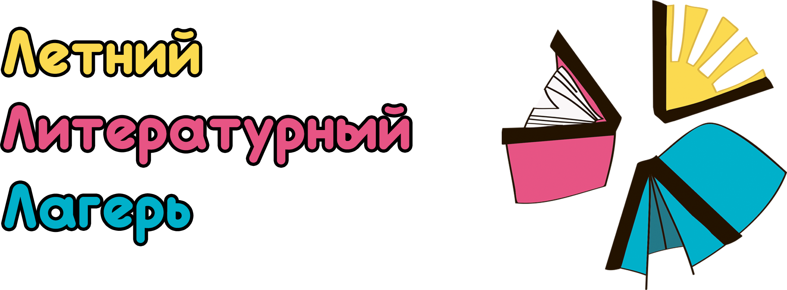
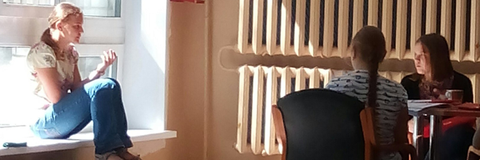
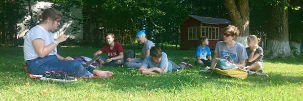
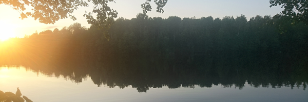

The heading of this page is made of three cyrillic letters L forming the abbreviation of /Letnij Literaturnyj Lager'/ which stands for Summer School of Literary Studies (you see, the cyrillic version looks much better). The shape of the letters is reflected in the logo representing three major axes of this association.
This yearly activity aims at high-school students (aged 14-17) interested in reading, reflecting on their experience and analyzing texts. In 21 days spent together in the countryside, teenagers are provided with ca. 90 hours of lectures, seminars, intellectual games and other learning and recreational activities.


After five successful editions, our team gathers more than 30 tutors, some of which have been in ЛЛЛ as students. Their expertese ranges from formal linguistics to art history, including classics, textual criticism, not to mention varied interests in world literatures. All this knowledge is shared with students to give them way in the academic world.
The ЛЛЛ association also organizes diverse online and offline events to disseminate literary studies and text analysis. This pushes our team to explore new methods and adapt to students' expectations. The breathtaking views of lakes and pines crowns the harmony of mind, spirit and senses.
